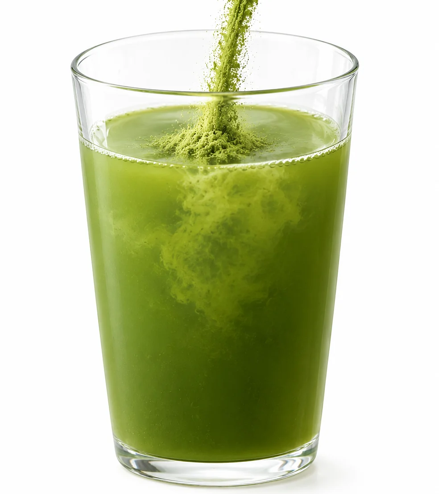
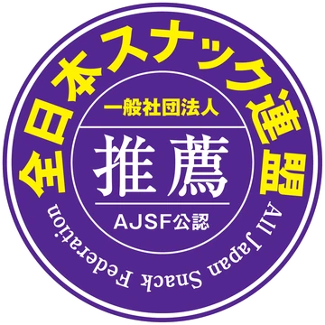
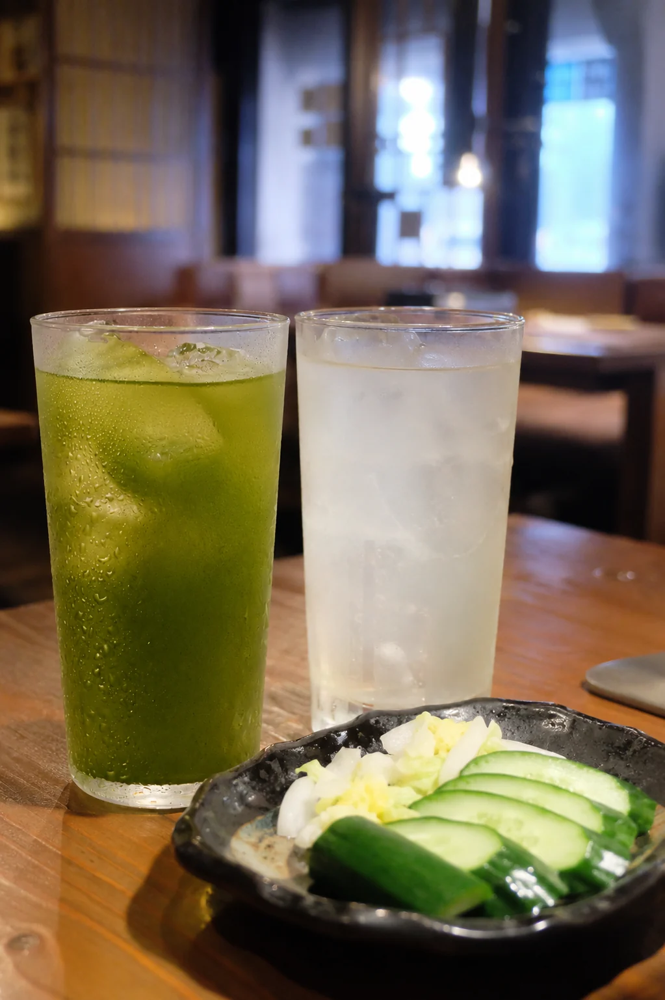
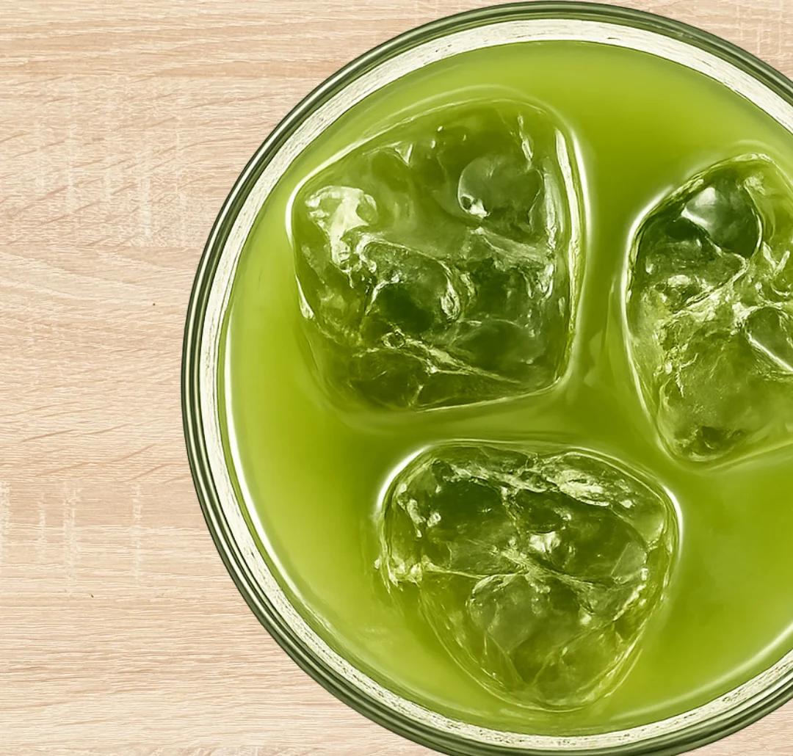
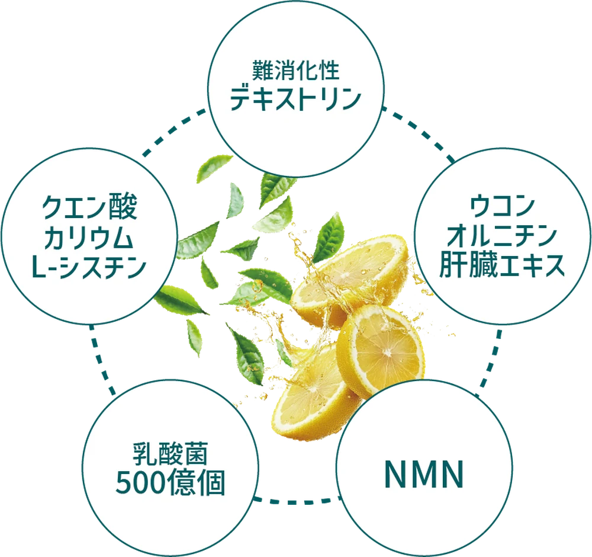
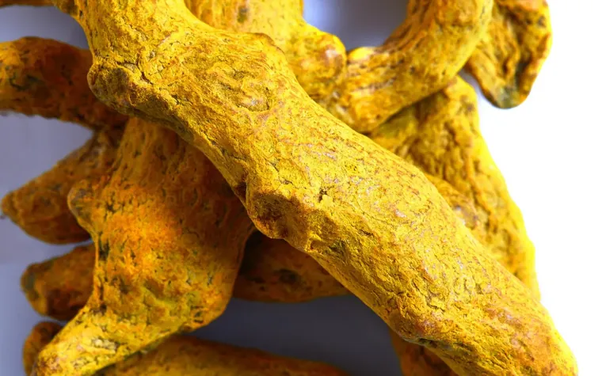
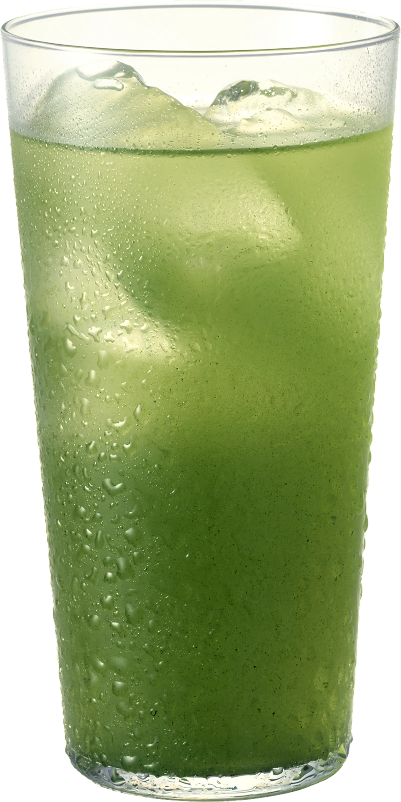
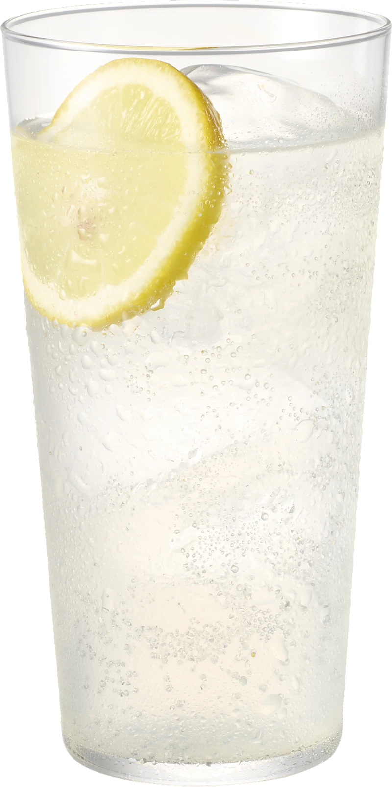
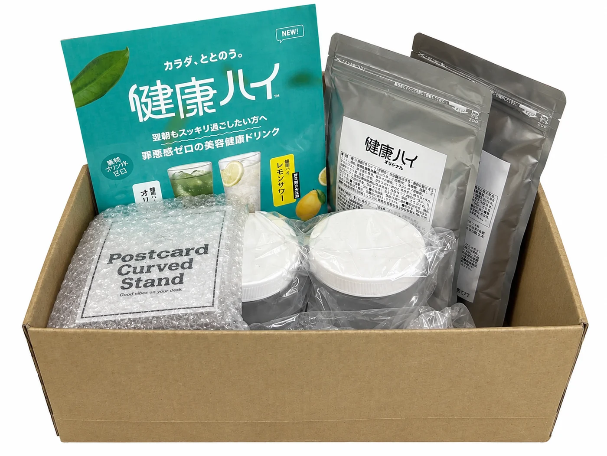

昼
水で溶かして、栄養補給に
オフィスにも、持っていけます。
粉末なので、水筒やマイボトルに溶かして持ち運べます。職場に1袋置いておく、という使い方も。水でもお湯でも溶けるので、季節を選びません。食事のバランスや野菜不足が気になる方に。
一般社団法人 全日本スナック連盟
公式スポンサー
いつもの焼酎に小さじ1杯の簡単習慣
W使い昼は水で。夜はお酒で。

※ 写真はイメージです
300g 約100杯分 ／ 1杯あたり
約80円
※ 健康ハイの粉末のみの金額です。お酒代は含みません。

飲食店で選ばれ、3ヶ月で100店舗に導入
「健康ハイ」は、水にもお酒にも混ぜられる粉末の青汁抹茶です。明日葉・ケール・大麦若葉に、国産の抹茶をあわせました。
やることは、いつもの焼酎に小さじ1杯を足すだけ。道具も手間も増えません。お酒を飲まない昼は、水やお湯に溶かしてそのままお飲みいただけます。
休肝日をつくる必要も、飲む量を減らす必要もありません。1袋で、一日に二度はたらきます。
オフィスにも、持っていけます。
粉末なので、水筒やマイボトルに溶かして持ち運べます。職場に1袋置いておく、という使い方も。水でもお湯でも溶けるので、季節を選びません。食事のバランスや野菜不足が気になる方に。

緑茶ハイの感覚で、飲めます。
いつもの焼酎に小さじ1杯。緑茶ハイの感覚で飲める青汁抹茶ハイになります。晩酌はもちろん、来客のおもてなしや食事どきにも。お酒を飲まない方は、そのまま水や炭酸水で。
焼酎を30〜45ml
氷より先に、グラスへ注ぎます。
健康ハイを小さじ1杯（3g）
付属のスプーンで入れ、よく混ぜます。
氷と、水か炭酸水で割る
オリジナルは水、レモンサワーは炭酸水で。
道具も、手間も増えません。
いつもの晩酌の手順が、ひとつ増えるだけです。
溶かすと、こうなります。

ベースが抹茶なので、青汁特有の青くささはほとんどありません。


とうもろこし由来の水溶性食物繊維。食事と一緒に摂りたい成分として、広く知られています。

青汁素材に国産の抹茶をあわせた王道ブレンド。クセを抑えているので、お茶の感覚で飲めます。

「飲みの席」の定番として親しまれてきた成分。しじみでおなじみのアミノ酸とあわせて配合しています。
※ 本品は機能性表示食品・特定保健用食品ではありません。特定の効果・効能を保証するものではありません。
健康ハイは、もともと飲食店向けの割材です。毎晩お客様に出す立場のプロに選ばれ、3ヶ月で100店舗へ導入されました。全日本スナック連盟の公式スポンサーでもあります。
★★★★★
抹茶の香りがちゃんとします。ちゃんとして美味しいです。
オリジナル（青汁抹茶）をご購入
★★★★☆
夫用に買いました。野菜を食べてくれない人なので、こういう形なら文句を言われません。
オリジナル（青汁抹茶）をご購入
★★★★★
行きつけのお店で飲んで気に入って、家用に買いました。レモンは炭酸が合います。
レモンサワーをご購入
★★★★★
次の日すっきりとして迎えられた。体調が良くなった。
オリジナル（青汁抹茶）をご購入
★★★★★
食事に合わせやすくて飲みやすい。毎日一杯飲んでいます。
オリジナル（青汁抹茶）をご購入
※ お客様個人の感想であり、効果を保証するものではありません。

青汁抹茶。水で割って、緑茶ハイの感覚で。和食・中華にもよく合います。

甘さ控えめの王道レモン。炭酸水で割って。焼肉や焼鳥など、こってりした日に。
お酒を入れなければ、
ノンアルコールとしてもお飲みいただけます。
都度購入のみ・定期縛りはありません
健康ハイ 300g

8,000円（税込）
約100杯分／1杯あたり約80円
※ 1杯あたりの金額は健康ハイの粉末のみのものです。お酒代は含みません。
※ 送料・お届け日数は購入ページをご確認ください。
こちらが、お手元に届きます。

商品パックのほか、専用マドラーと計量スプーン、
ご案内を同封してお届けします。
いいえ。健康ハイは粉末の「割材」です。それ自体にアルコールは含まれていません。焼酎などのお酒を割ってお使いいただく商品です。お酒を使わず、水や炭酸水に溶かしてノンアルコールドリンクとしてもお飲みいただけます。
1袋で約100杯分なので、1杯あたり約80円です。これは健康ハイの粉末のみの金額で、お酒代は含みません。
ありません。健康ハイは都度購入のみです。自動で継続して届くことはありませんので、必要なときだけご注文ください。
はい。粉末を水やお湯、炭酸水に溶かすだけで、そのまま青汁抹茶としてお飲みいただけます。健康ハイ自体にアルコールは含まれていません。お酒を飲まないご家族と1袋を分け合って使う、という方もいらっしゃいます。
ベースが抹茶なので、いわゆる「青汁の青くささ」はほとんどありません。緑茶ハイや抹茶ラテが飲める方であれば、問題なくお召し上がりいただけます。まずは少なめの量から調整してみてください。
冷たいお酒に入れると沈みやすいため、専用のマドラーと計量スプーンを同封しています。お酒→粉末→氷→水（炭酸水）の順に入れるのがおすすめです。氷を入れる前の常温のお酒に先に溶かすことで、底に粉が残りません。
粉末タイプなので、常温で保存できます。アルミパックはチャック付きなので、開封後もそのまま閉じて保管いただけます。直射日光と高温多湿を避けて保管してください。賞味期限はパッケージに記載しています。
健康ハイは食品であり、医薬品ではありません。飲酒による影響を防いだり、治したりするものではないため、お酒はご自身の適量の範囲でお楽しみください。妊娠中・授乳中の方、20歳未満の方の飲酒は法律で禁止されています。
味のこと、飲み方のこと、届くまでのこと。
LINEで直接お答えします。
タップすると、LINEに文面が入った状態で開きます。
内容を変えて送っていただいても構いません。
飲む量を減らさなくていい。我慢しなくていい。
いつもの焼酎に、小さじ1杯を足すだけです。
オリジナル（青汁抹茶）／レモンサワー からお選びいただけます